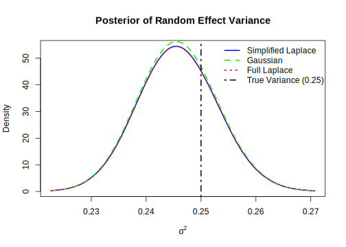
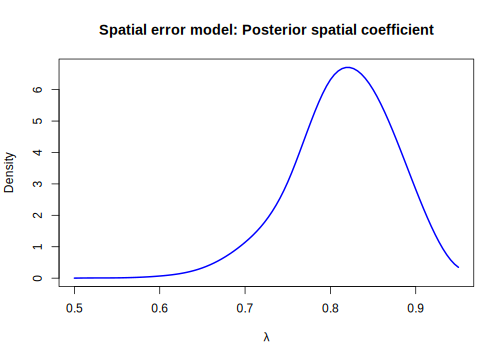
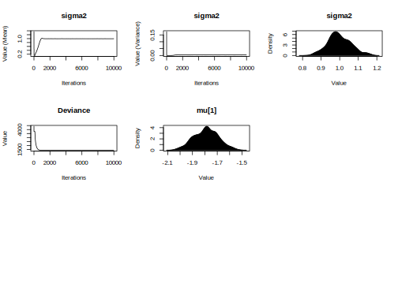

14.2 Optimization approaches
Traditional MCMC and importance sampling (IS) algorithms require pointwise evaluation of the likelihood function, which entails a massive number of operations when applied to very large datasets. Unfortunately, these algorithms are not designed to be scalable, at least in their standard form (see Chapter 12 for alternatives). Moreover, when the parameter space is large, they also lack scalability with respect to the number of parameters. Therefore, approximation methods should be considered even when the likelihood function has an analytical expression.
Optimization approaches are designed to scale efficiently with high-dimensional parameter spaces and large datasets. The key idea is to replace simulation with optimization. In this section, we introduce the most common optimization approaches within the Bayesian inferential framework.
14.2.1 Integrated nested Laplace approximations
Integrated Nested Laplace Approximations (INLA) is a deterministic approach for Bayesian inference in latent Gaussian models (LGMs) (Rue, Martino, and Chopin 2009). In particular, INLA approximates the marginal posterior distributions using a combination of Laplace approximations, low-dimensional deterministic integration, and optimization steps in sparse covariance settings (Rue et al. 2017). The advantages of INLA compared to MCMC are that it is fast and does not suffer from poor mixing.
The point of departure is a structured additive regression model, where the response variable \(y_i\) belongs to the exponential family such that the mean \(\mu_i\) is linked to a linear predictor \(\eta_i\) through the link function \(g(\cdot)\), that is, \(\eta_i = g(\mu_i)\), where
\[\begin{equation*} \mu_i = \alpha + \boldsymbol{\beta}^{\top}\boldsymbol{x}_{i} + \sum_{j=1}^{J}f^{(j)}(u_{ji}) + \epsilon_{i}, \end{equation*}\]
where \(\alpha\) is the general intercept, \(f^{(j)}\) are unknown functions of the covariates \(\boldsymbol{u}_i\), \(\boldsymbol{\beta}\) is a \(K\)-dimensional vector of linear effects associated with regressors \(\boldsymbol{x}_i\), and \(\epsilon_{i}\) is the unstructured error.
Note that latent Gaussian models encompass a wide range of relevant empirical models depending on the specific elements and structure involved in \(f^{(j)}\), such as generalized linear models with unobserved heterogeneity, spatial and/or temporal dependence, and semi-parametric models.
Latent Gaussian models assign a Gaussian prior to \(\alpha\), \(\boldsymbol{\beta}\), \(f^{(j)}\), and \(\epsilon_i\). Let \(\boldsymbol{z}\) denote the vector of all latent Gaussian variables \(\{\alpha, \boldsymbol{\beta}, f^{(j)}, \eta_i\}\), where the dimension is potentially \(P = 1 + K + J + N\) (although this is not always the case), and let \(\boldsymbol{\theta}\) be the \(m\)-dimensional vector of hyperparameters. Then, the density \(\pi(\boldsymbol{z} \mid \boldsymbol{\theta}_1)\) is Gaussian with mean zero and precision matrix (i.e., the inverse of the covariance matrix) \(\boldsymbol{Q}(\boldsymbol{\theta}_1)\).
The distribution of \(\boldsymbol{y}\) is \(p(\boldsymbol{y} \mid \boldsymbol{z}, \boldsymbol{\theta}_2)\) such that \(y_i\) are conditionally independent given \(z_i\) and \(\boldsymbol{\theta}_2\), \(\boldsymbol{\theta} = [\boldsymbol{\theta}_1^{\top} \ \boldsymbol{\theta}_2^{\top}]^{\top}\) for \(i = 1,2,\dots,N\). Thus, the posterior distribution is
\[\begin{align} \pi(\boldsymbol{z}, \boldsymbol{\theta} \mid \boldsymbol{y}) &\propto \pi(\boldsymbol{\theta}) \times \pi(\boldsymbol{z} \mid \boldsymbol{\theta}_1) \times \prod_{i=1}^{N} p(y_i \mid \boldsymbol{z}, \boldsymbol{\theta}_2) \tag{14.1} \\ &\propto \pi(\boldsymbol{\theta}) \, |\boldsymbol{Q}(\boldsymbol{\theta}_1)|^{1/2} \exp\left\{-\frac{1}{2} \boldsymbol{z}^{\top} \boldsymbol{Q}(\boldsymbol{\theta}_1) \boldsymbol{z} + \sum_{i=1}^N \log p(y_i \mid z_i, \boldsymbol{\theta}_2) \right\}.\notag \end{align}\]
Most models in INLA assume a conditional independence structure within the high-dimensional latent Gaussian field; that is, \(\boldsymbol{z}\) is a Gaussian Markov random field (GMRF) with a sparse precision matrix \(\boldsymbol{Q}(\boldsymbol{\theta}_1)\). A second key assumption is that the dimension of \(\boldsymbol{\theta}\) is small, for instance, \(m < 15\). These assumptions are essential for enabling fast approximate inference.
The main aim in INLA is to approximate the marginal posterior distributions \(\pi(z_i \mid \boldsymbol{y})\) and \(\pi(\theta_l \mid \boldsymbol{y})\), for \(l = 1, 2, \dots, m\).
The posterior distribution of \(\boldsymbol{\theta}\) is:
\[\begin{align*} \pi(\boldsymbol{\theta} \mid \boldsymbol{y}) &= \frac{p(\boldsymbol{y}, \boldsymbol{\theta})}{p(\boldsymbol{y})} \\ &= \frac{p(\boldsymbol{y}, \boldsymbol{\theta})}{p(\boldsymbol{y})} \times \frac{\pi(\boldsymbol{z} \mid \boldsymbol{\theta}, \boldsymbol{y})}{\pi(\boldsymbol{z} \mid \boldsymbol{\theta}, \boldsymbol{y})} \\ &= \frac{p(\boldsymbol{z}, \boldsymbol{\theta}, \boldsymbol{y})}{p(\boldsymbol{y}) \pi(\boldsymbol{z} \mid \boldsymbol{\theta}, \boldsymbol{y})} \\ &\propto \frac{p(\boldsymbol{z}, \boldsymbol{\theta}, \boldsymbol{y})}{\pi(\boldsymbol{z} \mid \boldsymbol{\theta}, \boldsymbol{y})} \\ &\propto \frac{p(\boldsymbol{y} \mid \boldsymbol{z}, \boldsymbol{\theta}) \pi(\boldsymbol{z} \mid \boldsymbol{\theta}) \pi(\boldsymbol{\theta})}{\pi(\boldsymbol{z} \mid \boldsymbol{\theta}, \boldsymbol{y})}. \end{align*}\]
The numerator in the previous expression is easy to calculate (see Equation (14.1)), but the denominator is generally not available in closed form and is difficult to compute. Thus, INLA approximates it at specific values \(\boldsymbol{\theta}_g\) as follows:
\[\begin{align*} \pi_a(\boldsymbol{\theta}_g \mid \boldsymbol{y}) &\propto \frac{p(\boldsymbol{y} \mid \boldsymbol{z}, \boldsymbol{\theta}_g) \pi(\boldsymbol{z} \mid \boldsymbol{\theta}_g) \pi(\boldsymbol{\theta}_g)}{\pi_{a,G}(\boldsymbol{z} \mid \boldsymbol{\theta}_g, \boldsymbol{y})}, \end{align*}\]
where \(\pi_{a,G}(z_i \mid \boldsymbol{\theta}_g, \boldsymbol{y})\) is a Gaussian approximation that matches the mode and covariance matrix of the full posterior \(\pi(\boldsymbol{z} \mid \boldsymbol{\theta}, \boldsymbol{y})\).
The approximation error of \(\pi_a(\boldsymbol{\theta} \mid \boldsymbol{y})\) is \(O(N^{-1})\) under standard conditions, meaning that the error, when multiplied by \(N\), remains bounded (Tierney and Kadane 1986; Rue, Martino, and Chopin 2009). However, in many applications using INLA, the dimension of the latent Gaussian variables, \(P\), increases with the sample size. In such cases, the error rate becomes \(O(P/N)\). When \(P/N \rightarrow 1\), which occurs in many models, the approximation error becomes \(O(1)\): bounded, but potentially large.
Therefore, it is important to check the effective number of parameters, as the asymptotic error of \(\pi_a(\boldsymbol{\theta} \mid \boldsymbol{y})\) depends on the dimension of \(\boldsymbol{z}\). According to Rue, Martino, and Chopin (2009), in most of their applications the effective number of parameters is small relative to the sample size in regions near the mode of \(\pi_a(\boldsymbol{\theta} \mid \boldsymbol{y})\).
The marginal posterior \(\pi(z_i \mid \boldsymbol{\theta}, \boldsymbol{y})\) is more challenging to compute due to the potentially high dimension of \(\boldsymbol{z}\). It may seem intuitive to use the Gaussian approximation \(\pi_{a,G}(\boldsymbol{z} \mid \boldsymbol{\theta}, \boldsymbol{y})\); however, this is often not sufficiently accurate due to its lack of skewness. An alternative is to use the following expression
\[\begin{align*} \pi(z_i\mid \boldsymbol{\theta},\boldsymbol{y})&=\frac{p(z_i,\boldsymbol{\theta},\boldsymbol{y})}{p(\boldsymbol{\theta},\boldsymbol{y})}\\ &=\frac{p(z_i,\boldsymbol{\theta},\boldsymbol{y})}{p(\boldsymbol{\theta},\boldsymbol{y})}\times \frac{\pi(\boldsymbol{z}\mid\boldsymbol{\theta},\boldsymbol{y})}{\pi(\boldsymbol{z}\mid\boldsymbol{\theta},\boldsymbol{y})}\\ &=\frac{\pi(\boldsymbol{z}\mid\boldsymbol{\theta},\boldsymbol{y})}{p(\boldsymbol{z},\boldsymbol{\theta},\boldsymbol{y})}\times p(z_i,\boldsymbol{\theta},\boldsymbol{y})\\ &=\frac{\pi(\boldsymbol{z}\mid\boldsymbol{\theta},\boldsymbol{y})}{\pi(\boldsymbol{z}_{-i}\mid z_i,\boldsymbol{\theta},\boldsymbol{y})}\\ &\propto \frac{p(\boldsymbol{y}\mid \boldsymbol{z},\boldsymbol{\theta})\pi(\boldsymbol{z}\mid\boldsymbol{\theta})\pi(\boldsymbol{\theta})}{\pi(\boldsymbol{z}_{-i}\mid z_i,\boldsymbol{\theta},\boldsymbol{y})}, \end{align*}\] where the second-to-last equality follows from the identity \(\pi(\boldsymbol{z}_{-i} \mid z_i, \boldsymbol{\theta}, \boldsymbol{y}) = \frac{p(\boldsymbol{z}, \boldsymbol{\theta}, \boldsymbol{y})}{p(z_i, \boldsymbol{\theta}, \boldsymbol{y})}\), and \(-i\) denotes all elements of \(\boldsymbol{z}\) except the \(i\)-th.
We can approximate the denominator in the last expression using a simplified Laplace approximation, which corrects the Gaussian approximation for location and skewness via a Taylor series expansion about the mode of the Laplace approximation . This follows the spirit of the approximations developed by for posterior moments and marginal densities, and is similar to those used in Chapter 10 when performing Bayesian model averaging (BMA) using the BIC information criterion. The discussion about the asymptotic error of the approximation \(\pi_{a}(z_i \mid \boldsymbol{\theta}, \boldsymbol{y})\) follows the same arguments as those for \(\pi_a(\boldsymbol{\theta} \mid \boldsymbol{y})\).
We can obtain the marginal posterior distributions integrating with respect to \(\boldsymbol{\theta}\), \[\begin{align*} \pi(z_i\mid \boldsymbol{y})&=\int_{{\Theta}} \pi(z_i\mid \boldsymbol{\theta},\boldsymbol{y})\pi(\boldsymbol{\theta}\mid\boldsymbol{y})d\boldsymbol{\theta}\\ \pi(\theta_l\mid\boldsymbol{y})&=\int_{{\Theta}} \pi(\boldsymbol{\theta}\mid \boldsymbol{y})d\boldsymbol{\theta}_{-l}. \end{align*}\] This integrals are solve numerically using a smart grid around the mode of \(\pi_a(\boldsymbol{\theta}\mid\boldsymbol{y})\). In particular, \[\begin{align*} \pi_a(z_i\mid \boldsymbol{y})&=\sum_{g=1}^G \pi_{a}(z_i\mid \boldsymbol{\theta}_g,\boldsymbol{y})\pi_a(\boldsymbol{\theta}_g\mid \boldsymbol{y})\Delta_g, \end{align*}\] where \(\pi_{a}(z_i\mid \boldsymbol{\theta}_g,\boldsymbol{y})\) is the approximation of \(\pi(z_i\mid \boldsymbol{\theta},\boldsymbol{y})\) evaluated at \(\boldsymbol{\theta}_g\). Then, we have the sum over the values of \(\boldsymbol{\theta}\) with area weights \(\Delta_g\). If all support points are equidistant, then \(\Delta_g = 1\).
The following Algorithm presents the INLA algorithm. Note that stages 2 and 3 correspond to the nested Laplace approximations, whereas stage 4 involves the integration step.
Algorithm: Integrated Nested Laplace Approximations
Obtain the mode of \(\pi_a(\boldsymbol{\theta} \mid \boldsymbol{y})\), that is, \(\boldsymbol{\theta}^*\), by maximizing \(\log \pi_a(\boldsymbol{\theta} \mid \boldsymbol{y})\).
Compute \(\pi_a(\boldsymbol{\theta}_g \mid \boldsymbol{y})\) for a set of high-density points \(\boldsymbol{\theta}_g\), \(g = 1, 2, \dots, G\).
Compute the approximation \(\pi_a(z_i \mid \boldsymbol{\theta}_g, \boldsymbol{y})\) for \(g = 1, 2, \dots, G\).
Compute \(\pi_a(z_i \mid \boldsymbol{y})\) and \(\pi_a(\theta_l \mid \boldsymbol{y})\) using numerical integration.
Thus, INLA can be used in latent Gaussian models (LGMs) that satisfy the following conditions (Rue et al. 2017; Martino and Riebler 2019):
- There is conditional independence, that is, \(y_i \perp y_s \mid \eta_i, \boldsymbol{\theta}\), such that
\[ p(\boldsymbol{y} \mid \boldsymbol{z}, \boldsymbol{\theta}) = \prod_{i=1}^{N} p(y_i \mid \eta_i, \boldsymbol{\theta}). \] - The dimension of \(\boldsymbol{\theta}\) is small, typically less than 15.
- \(\boldsymbol{z}\) is a Gaussian Markov random field (GMRF) with a sparse precision matrix.
- The linear predictor depends linearly on the smooth unknown functions of covariates.
- Inference is focused on the marginal posterior distributions \(\pi(z_i \mid \boldsymbol{y})\) and \(\pi(\theta_l \mid \boldsymbol{y})\).
Rue, Martino, and Chopin (2009) also discusses how to approximate the marginal likelihood and compute the deviance information criterion (DIC) (Spiegelhalter et al. 2002) for model selection, as well as how to perform predictive analysis.
The starting point for INLA is the class of latent Gaussian models (LGMs); therefore, discrete latent classes are not supported. Additionally, since INLA relies on local approximations around the mode, it may struggle with multimodal posteriors, as there is no global exploration of the parameter space.
Implementing INLA from scratch is complex (Martino and Riebler 2019); applications are therefore generally limited to the models available in the INLA package in R.83 However, new packages have been developed for specialized models, and recent approaches combine INLA with MCMC (see Table 2 in Martino and Riebler (2019)).
Example: Poisson model with unobserved heterogeneity
Let’s simulate the model \(Y_i \sim \text{Poisson}(\lambda_i)\), where \(\lambda_i = \exp\left\{1 + x_i + \epsilon_i\right\}\), with
\(\epsilon_i \sim {N}(0, 0.5^2)\) and \(x_i \sim {N}(0, 1^2)\) for \(i = 1, 2, \dots, 10,\!000\).
Note that \(\epsilon_i\) represents unobserved heterogeneity.
The following code demonstrates how to perform inference using the INLA package.
Keep in mind that INLA specifies Gaussian priors in terms of precision (the inverse of the variance).
We present results using the three available approximation strategies in INLA: Simplified Laplace (default), Gaussian, and full Laplace.
In this example, the results are practically identical across methods (see the Figures), and all 95% credible intervals contain the true population parameters.
Despite the large sample size, INLA performs inference in a matter of seconds.
# Install Rtools according to your R version
# Check Rtolls is properly installed
# Install INLA
# install.packages("INLA",repos=c(getOption("repos"),INLA="https://inla.r-inla-download.org/R/stable"), dep=TRUE)
rm(list = ls()); set.seed(010101); library(INLA)## This is INLA_24.12.11 built 2024-12-11 19:58:26 UTC.
## - See www.r-inla.org/contact-us for how to get help.
## - List available models/likelihoods/etc with inla.list.models()
## - Use inla.doc(<NAME>) to access documentationn <- 10000; x <- rnorm(n, sd = 1); u <- rnorm(n, sd = 0.5)
intercept <- 1; beta <- 1; id <- 1:n
y <- rpois(n, lambda = exp(intercept + beta * x + u))
my.data <- data.frame(y, x, id)
formula <- y ~ 1 + x + f(id, model="iid")
inla.sla <- inla(formula, data = my.data, family = "poisson", control.compute=list(return.marginals.predictor=TRUE))
inla.ga <- inla(formula, data = my.data, family = "poisson", control.inla = list(strategy = "gaussian", int.strategy = "eb"), control.compute=list(return.marginals.predictor=TRUE))
inla.la <- inla(formula, data = my.data, family = "poisson", control.inla = list(strategy = "laplace", int.strategy = "grid", dz=0.1, diff.logdens=20),
control.compute=list(return.marginals.predictor=TRUE))
summary(inla.sla)## Time used:
## Pre = 1.57, Running = 3.59, Post = 1.23, Total = 6.39
## Fixed effects:
## mean sd 0.025quant 0.5quant 0.975quant mode kld
## (Intercept) 0.989 0.009 0.971 0.989 1.006 0.989 0
## x 1.007 0.008 0.991 1.007 1.023 1.007 0
##
## Random effects:
## Name Model
## id IID model
##
## Model hyperparameters:
## mean sd 0.025quant 0.5quant 0.975quant mode
## Precision for id 4.07 0.122 3.84 4.07 4.32 4.07
##
## Marginal log-Likelihood: -21964.41
## is computed
## Posterior summaries for the linear predictor and the fitted values are computed
## (Posterior marginals needs also 'control.compute=list(return.marginals.predictor=TRUE)')marg_sla <- inla.sla$marginals.fixed$x
marg_ga <- inla.ga$marginals.fixed$x
marg_la <- inla.la$marginals.fixed$x
plot(marg_sla, type = "l", col = "blue", lwd = 2, xlab = expression(beta[x]), ylab = "Density", main = "Posterior of slope under different INLA strategies")
lines(marg_ga, col = "green", lwd = 2, lty = 2)
lines(marg_la, col = "red", lwd = 2, lty = 3)
abline(v = 1, col = "black", lty = 4, lwd = 2)
legend("topright", legend = c("Simplified Laplace", "Gaussian", "Full Laplace", "True = 1"), col = c("blue", "green", "red", "black"), lwd = 2, lty = c(1, 2, 3, 4), bty = "n")
## [1] 0.9906524 1.0068406 1.0230694# Variance
marg.prec.sla <- inla.sla$marginals.hyperpar[["Precision for id"]]
marg.prec.ga <- inla.ga$marginals.hyperpar[["Precision for id"]]
marg.prec.la <- inla.la$marginals.hyperpar[["Precision for id"]]
marg.var.sla <- inla.tmarginal(function(x) 1/x, marg.prec.sla)
marg.var.ga <- inla.tmarginal(function(x) 1/x, marg.prec.ga)
marg.var.la <- inla.tmarginal(function(x) 1/x, marg.prec.la)
# Base plot
plot(marg.var.sla, type = "l", col = "blue", lwd = 2, xlab = expression(sigma^2), ylab = "Density", main = "Posterior of Random Effect Variance")
lines(marg.var.ga, col = "green", lwd = 2, lty = 2)
lines(marg.var.la, col = "red", lwd = 2, lty = 3)
abline(v = 0.25, col = "black", lty = 4, lwd = 2)
legend("topright", legend = c("Simplified Laplace", "Gaussian", "Full Laplace", "True Variance (0.25)"), col = c("blue", "green", "red", "black"), lwd = 2, lty = c(1, 2, 3, 4), bty = "n")
## [1] 0.2316800 0.2456598 0.2603362Example: Spatial econometrics model
The starting point of spatial econometrics is the contiguity or adjacency matrix \(W\), which defines which spatial polygons (regions) are considered neighbors. This is an \(N \times N\) matrix, where each row and column corresponds to a spatial polygon, and a non-zero element indicates that two polygons are neighbors. By construction, the main diagonal is zero, meaning no polygon is a neighbor to itself. Given its structure, the contiguity matrix is sparse.
There are various ways to define contiguity between spatial units. Two common criteria are the queen and rook criteria, inspired by chess. Under the queen criterion, two units are neighbors if they share any part of a boundary or a point. In contrast, under the rook criterion, two units are neighbors only if they share a common edge, touching at a corner is not sufficient.
However, users may define contiguity in other ways depending on context. For example, contiguity could be based on travel time between centroids or proximity between main towns. Typically, the matrix \(W\) is binary: a 1 indicates two regions are neighbors, and a 0 otherwise. Often, the matrix is row-standardized to aid in analyzing spatial stationarity.
LeSage and Pace (2009) and Bivand, Gómez-Rubio, and Rue (2015) describe the most widely used models in spatial econometrics: the spatial error model (SEM), spatial autoregressive model (SAR), and spatial Durbin model (SDM), which can be combined into the general nesting spatial (GNS) model (Elhorst et al. 2014; Ramírez Hassan 2017).
In particular, the SEM is defined as:
\[\begin{align*} \boldsymbol{y} &= \boldsymbol{X\beta} + \boldsymbol{\mu}, \\ \boldsymbol{\mu} &= \lambda \boldsymbol{W\mu} + \boldsymbol{\epsilon}, \end{align*}\]
where \(\boldsymbol{\epsilon} \sim {N}(\boldsymbol{0}_N, \sigma^2 \boldsymbol{I}_N)\). Then,
\[ \boldsymbol{\mu} = (\boldsymbol{I}_N - \rho \boldsymbol{W})^{-1} \boldsymbol{\epsilon}, \]
which implies
\[ \boldsymbol{y} = \boldsymbol{X\beta} + \boldsymbol{e}, \]
where
\[ \boldsymbol{e} \sim {N}(\boldsymbol{0}, \sigma^2 (\boldsymbol{I}_N - \rho \boldsymbol{W})^{-1} (\boldsymbol{I}_N - \rho \boldsymbol{W}^{\top})^{-1}). \]
In this model, \(\lambda\) controls the degree of spatial dependence.
The SAR model is given by:
\[\begin{align*} \boldsymbol{y} &= \rho \boldsymbol{W y} + \boldsymbol{X\beta} + \boldsymbol{\mu}, \\ &= (\boldsymbol{I}_N - \rho \boldsymbol{W})^{-1} \boldsymbol{X\beta} + \boldsymbol{\epsilon}, \end{align*}\]
where \(\boldsymbol{\epsilon} = (\boldsymbol{I}_N - \rho \boldsymbol{W})^{-1} \boldsymbol{\mu}\).
The SDM model is:
\[\begin{align*} \boldsymbol{y} &= \rho \boldsymbol{W y} + \boldsymbol{X\beta} + \boldsymbol{W X \delta} + \boldsymbol{\mu}, \\ &= (\boldsymbol{I}_N - \rho \boldsymbol{W})^{-1} (\boldsymbol{X\beta} + \boldsymbol{W X \delta}) + \boldsymbol{\epsilon}, \end{align*}\]
where \(\boldsymbol{\epsilon} = (\boldsymbol{I}_N - \rho \boldsymbol{W})^{-1} \boldsymbol{\mu}\).
The degree of spatial dependence in the SAR and SDM models is determined by the parameter \(\rho\). Note that the SDM model is similar to the SAR model, except that it also includes spatial lags of the regressors as additional covariates.
Ord (1975) and Anselin (1982) show that a necessary condition for weak stationarity in spatial autoregressive processes with a row-standardized contiguity matrix is that the spatial autocorrelation coefficient must lie between \(1/\omega_{\min}\) and 1, where \(\omega_{\min}\) is the smallest (most negative) eigenvalue of the contiguity matrix.84
Note that these three models, conditional on the spatial parameter, are standard linear regressions, which can be easily estimated using INLA. Bivand, Gómez-Rubio, and Rue (2015) use the INLABMA package to estimate these models conditional on different values of the spatial parameters, and then perform Bayesian Model Averaging (BMA) using the resulting estimates. In particular, it is necessary to define a grid over the spatial parameters, perform Bayesian inference using INLA for each value in the grid, and then aggregate the posterior results using BMA.
We now perform Bayesian inference on a spatial econometric model using the INLA and INLABMA packages, based on the dataset provided by Ramı́rez Hassan and Montoya Blandón (2019), who conducted a Bayesian analysis of electricity demand in the department of Antioquia (Colombia), accounting for spatial dependence between municipalities using a Conditional Autoregressive (CAR) spatial model. In particular, we conduct inference using the following specification:
\[\begin{align*} \log(\text{Electricity}_i) &= \beta_1 + \beta_2 \log(\text{Elect. price}_i) + \beta_3 \log(\text{Income}_i) \\ &\quad + \beta_4 \log(\text{Subs. price}_i) + \mu_i, \end{align*}\]
where \(\boldsymbol{\mu} = \lambda \boldsymbol{W} \boldsymbol{\mu} + \epsilon\).
Electricity is the average per capita annual consumption of electricity by individuals living in households of stratum one in each municipality of Antioquia. Elect. price is the average price of electricity (per kWh), Income is average per capita annual income, and Subs. price is the average price of an electricity substitute (see Ramı́rez Hassan and Montoya Blandón (2019) for details).
The following code illustrates how to carry out a spatial econometric analysis. First, we download the files needed to plot the maps and construct the contiguity matrix. These files are available in the folder DataApp/Antioquia of our GitHub repository: https://github.com/besmarter/BSTApp. The initial part of the code demonstrates how to download the GitHub repository and extract the necessary files for mapping.
The first Figure displays the average electricity consumption per municipality. We observe the presence of spatial clusters, particularly in the northwestern region, which corresponds to a low-altitude area along the Caribbean coast.
The second part of the code constructs the contiguity matrix using the queen criterion. The second Figure illustrates the spatial links between municipalities. Following this, we estimate a standard Ordinary Least Squares (OLS) regression and conduct spatial autocorrelation tests on the residuals. The null hypothesis of both the global and local Moran’s I tests is the absence of spatial autocorrelation in the OLS residuals. We reject the null hypothesis.
Finally, we perform Bayesian inference over a predefined grid of values for the spatial coefficient and apply Bayesian Model Averaging (BMA) using the INLABMA package. The third Figure shows the BMA posterior distribution of the spatial coefficient in the SEM, which indicates the presence of spatial dependence. The fourth Figure displays the posterior density of the own-price elasticity of electricity demand.
## Linking to GEOS 3.13.1, GDAL 3.10.2, PROJ 9.5.1; sf_use_s2() is TRUE## Warning: package 'spdep' was built under R version 4.5.2## Loading required package: spData## To access larger datasets in this package, install the spDataLarge
## package with: `install.packages('spDataLarge',
## repos='https://nowosad.github.io/drat/', type='source')`## Loading required package: spzip_url <- "https://github.com/BEsmarter-consultancy/BSTApp/archive/refs/heads/master.zip"
temp_zip <- tempfile(fileext = ".zip")
download.file(zip_url, temp_zip, mode = "wb")
temp_dir <- tempdir()
unzip(temp_zip, exdir = temp_dir)
antioquia_path <- file.path(temp_dir, "BSTApp-master", "DataApp", "Antioquia")
list.files(antioquia_path)## [1] "antioquia.dbf" "antioquia.shp" "antioquia.shx" "antioquia.xls"antioquia_path <- file.path(temp_dir, "BSTApp-master", "DataApp", "Antioquia")
shp_file <- file.path(antioquia_path, "Antioquia.shp")
antioquia <- st_read(shp_file)## Reading layer `antioquia' from data source
## `C:\Users\aramir21\AppData\Local\Temp\Rtmpek0djU\BSTApp-master\DataApp\Antioquia\antioquia.shp'
## using driver `ESRI Shapefile'
## Simple feature collection with 124 features and 57 fields
## Geometry type: POLYGON
## Dimension: XY
## Bounding box: xmin: 664005.8 ymin: 1095683 xmax: 1022528 ymax: 1473214
## CRS: NAinterval <- classIntervals(antioquia$CONS_OLD, 5, style = "quantile")
antioquia$cons_class <- cut(antioquia$CONS_OLD,breaks = interval$brks,include.lowest = TRUE)
plotcolors <- brewer.pal(5, "Reds")
tmap_mode("plot")## ℹ tmap mode set to "plot".tm_shape(antioquia) +
tm_fill(fill = "cons_class", fill.scale = tm_scale(values = plotcolors), fill.legend = tm_legend(title = "Electricity consumption")) + tm_borders(col = "grey90") + tm_compass(type = "8star", position = c("right", "top")) + tm_layout(legend.outside = TRUE)
nb_object <- poly2nb(antioquia, queen = TRUE)
centroids <- st_centroid(st_geometry(antioquia))
coords <- st_coordinates(centroids)
plot(st_geometry(antioquia), border = "grey")
plot(nb_object, coords, add = TRUE, col = "red")
attach(antioquia)
fform <- L_CONS_OLD ~ L_P_OLD + L_ING_US + L_P_SUST
RegOLS <- lm(fform)
summary(RegOLS)##
## Call:
## lm(formula = fform)
##
## Residuals:
## Min 1Q Median 3Q Max
## -1.49373 -0.19187 0.02738 0.30441 1.01095
##
## Coefficients:
## Estimate Std. Error t value Pr(>|t|)
## (Intercept) -0.6816 1.4332 -0.476 0.63524
## L_P_OLD -1.1157 0.1689 -6.604 0.00000000115 ***
## L_ING_US 0.6190 0.1877 3.298 0.00128 **
## L_P_SUST 0.2417 0.2180 1.109 0.26972
## ---
## Signif. codes: 0 '***' 0.001 '**' 0.01 '*' 0.05 '.' 0.1 ' ' 1
##
## Residual standard error: 0.4839 on 120 degrees of freedom
## Multiple R-squared: 0.2888, Adjusted R-squared: 0.271
## F-statistic: 16.24 on 3 and 120 DF, p-value: 0.000000006358res <- RegOLS$residuals
NBList <- nb2listw(nb_object, style = "B")
moran_mc<- moran.mc(res, listw = NBList, 10000)
LM<-localmoran(as.vector(res), NBList)
sum(LM[,5]<0.05)## [1] 30# Bayesian estimation
zero.variance <- list(prec = list(initial = 25, fixed = TRUE))
ant.mat <- nb2mat(nb_object)
bmsp <- as(ant.mat, "CsparseMatrix")
antioquia$idx <- 1:nrow(antioquia)
rrho1 <- seq(0.5, 0.95, len = 10)
semmodels <- mclapply(rrho1, function(rho) {
sem.inla(fform, d = as.data.frame(antioquia), W = bmsp, rho = rho,
family = "gaussian", impacts = FALSE,
control.family = list(hyper = zero.variance),
control.predictor = list(compute = TRUE),
control.compute = list(dic = TRUE, cpo = TRUE),
control.inla = list(print.joint.hyper = TRUE))
})
bmasem <- INLABMA(semmodels, rrho1, 0, impacts = FALSE)
#Display results
plot(bmasem$rho$marginal, type="l", col = "blue", lwd = 2, xlab = expression(lambda), ylab = "Density", main = "Spatial error model: Posterior spatial coefficient")
## quant0.025 quant0.25 quant0.5 quant0.75 quant0.975
## 0.6791916 0.7771399 0.8181823 0.8575284 0.9201983marg_sla <- bmasem[["marginals.fixed"]][["L_P_OLD"]]
plot(marg_sla, type = "l", col = "blue", lwd = 2, xlab = expression(beta[x]), ylab = "Density", main = "Spatial error model: Posterior price elasticity")
## mean sd 0.025quant 0.5quant 0.975quant mode
## (Intercept) 0.4093381 1.3988779 -2.33757580 0.4092562 3.1566689 0.4092460
## L_P_OLD -1.1397584 0.1197509 -1.37493148 -1.1397555 -0.9046030 -1.1397557
## L_ING_US 0.3696569 0.2207831 -0.06389874 0.3696529 0.8032450 0.3696549
## L_P_SUST 0.1728503 0.1837474 -0.18788803 0.1728148 0.5337952 0.1728158
## kld
## (Intercept) 0.000000004340304
## L_P_OLD 0.000000004261211
## L_ING_US 0.000000004320653
## L_P_SUST 0.00000000431236514.2.2 Variational Bayes
Variational Bayes (VB) is a method from machine learning (Jordan et al. 1999; Wainwright, Jordan, et al. 2008) that replaces \(\pi(\boldsymbol{\theta} \mid \mathbf{y})\) with an approximation obtained through optimization using the calculus of variations, hence the name variational Bayes. This approach is useful when the posterior distribution is complex (e.g., multimodal) or when the parameter space is high-dimensional, making MCMC or IS algorithms computationally expensive.
The goal in VB is to approximate the posterior distribution using a distribution \(q(\boldsymbol{\theta})\) from a variational family \(\mathcal{Q}\), a class of distributions that is computationally convenient yet flexible enough to closely approximate the true posterior (Blei, Kucukelbir, and McAuliffe 2017). The distribution \(q\) is called the variational approximation to the posterior, and a particular \(q\) in \(\mathcal{Q}\) is defined by a specific set of variational parameters. Typically, this approximation is obtained by minimizing the Kullback–Leibler (KL) divergence between \(q(\boldsymbol{\theta})\) and \(\pi(\boldsymbol{\theta} \mid \mathbf{y})\).
\[\begin{align}
q^*(\boldsymbol{\theta}):=\underset{q \in \mathcal{Q}}{argmin} \ \text{KL}(q(\boldsymbol{\theta})||\pi(\boldsymbol{\theta} \mid \mathbf{y})),
\tag{14.2}
\end{align}\]
where \(\text{KL}(q(\boldsymbol{\theta}) \| \pi(\boldsymbol{\theta} \mid \mathbf{y})) = \mathbb{E}_q\left[\log\left(\frac{q(\boldsymbol{\theta})}{\pi(\boldsymbol{\theta} \mid \mathbf{y})}\right)\right]\).
Note that in relatively complex models, the optimization in Equation ((14.2) is not computable because it depends on the marginal likelihood \(p(\boldsymbol{y})\), which is typically unknown due to the intractability of the integral involved. However, there is a solution to this problem. Let’s see: \[\begin{align*} \log(p(\boldsymbol{y}))&=\log\left(\int_{\boldsymbol{\Theta}}p(\boldsymbol{y}\mid \boldsymbol{\theta})\pi(\boldsymbol{\theta})d\boldsymbol{\theta}\right)\\ &=\log\left(\int_{\boldsymbol{\Theta}}p(\boldsymbol{y}, \boldsymbol{\theta})d\boldsymbol{\theta}\right)\\ &=\log\left(\int_{\boldsymbol{\Theta}}\frac{p(\boldsymbol{y}, \boldsymbol{\theta})}{q(\boldsymbol{\theta})}q(\boldsymbol{\theta})d\boldsymbol{\theta}\right)\\ &=\log \mathbb{E}_q\left(\frac{p(\boldsymbol{y}, \boldsymbol{\theta})}{q(\boldsymbol{\theta})}\right)\\ &\geq \mathbb{E}_q\log\left(\frac{p(\boldsymbol{y}, \boldsymbol{\theta})}{q(\boldsymbol{\theta})}\right)\\ &=\mathbb{E}_q\log(p(\boldsymbol{y}, \boldsymbol{\theta}))-\mathbb{E}_q\log(q(\boldsymbol{\theta}))\\ &=\text{ELBO}(q(\boldsymbol{\theta})), \end{align*}\] where the inequality follows from Jensen’s inequality, since \(\log(\cdot)\) is concave. The last term is the (ELBO), which serves as a lower bound for the marginal likelihood. Note that the gap between the marginal likelihood and the ELBO is given by \[\begin{align*} \log(p(\boldsymbol{y})) - \text{ELBO}(q(\boldsymbol{\theta})) & = \log(p(\boldsymbol{y})) - \mathbb{E}_q\log(p(\boldsymbol{y}, \boldsymbol{\theta}))+\mathbb{E}_q\log(q(\boldsymbol{\theta}))\\ &=\mathbb{E}_q\left(\log(q(\boldsymbol{\theta}))-\log\left(\frac{p(\boldsymbol{y}, \boldsymbol{\theta})}{p(\boldsymbol{y})}\right)\right)\\ &=\mathbb{E}_q\left(\log(q(\boldsymbol{\theta}))-\log\left(\frac{p(\boldsymbol{y}\mid \boldsymbol{\theta})\pi( \boldsymbol{\theta})}{p(\boldsymbol{y})}\right)\right)\\ &=\mathbb{E}_q\left(\log(q(\boldsymbol{\theta}))-\log(\pi(\boldsymbol{\theta}\mid \boldsymbol{y}))\right)\\ &=\text{KL}(q(\boldsymbol{\theta})||\pi(\boldsymbol{\theta} \mid \mathbf{y})). \end{align*}\] Then, \[\begin{align*} \log(p(\boldsymbol{y})) = \text{KL}(q(\boldsymbol{\theta})||\pi(\boldsymbol{\theta} \mid \mathbf{y})) + \text{ELBO}(q(\boldsymbol{\theta})), \end{align*}\] which implies that maximizing the ELBO with respect to \(q(\boldsymbol{\theta})\) is equivalent to minimizing the KL divergence, since \(\log(p(\boldsymbol{y}))\) does not depend on \(q(\boldsymbol{\theta})\). This avoids the need to compute the marginal likelihood and, consequently, makes the variational problem easier to solve. In addition, it provides a lower bound for the marginal likelihood, which can potentially be used for model selection. Thus, solving problem (14.2) is equivalent to solving \[\begin{align} q^*(\boldsymbol{\theta}):=\underset{q \in \mathcal{Q}}{argmax} \ \text{ELBO}(q(\boldsymbol{\theta})). \tag{14.2} \end{align}\]
Note that the ELBO can be also expressed as \[\begin{align*} \text{ELBO}(q(\boldsymbol{\theta}))&=\mathbb{E}_q\log(p(\boldsymbol{y}, \boldsymbol{\theta}))-\mathbb{E}_q\log(q(\boldsymbol{\theta}))\\ &=\mathbb{E}_q\log(p(\boldsymbol{y}\mid \boldsymbol{\theta}))+\mathbb{E}_q\log(\pi(\boldsymbol{\theta}))-\mathbb{E}_q\log(q(\boldsymbol{\theta}))\\ &=\mathbb{E}_q\log(p(\boldsymbol{y}\mid \boldsymbol{\theta}))-\text{KL}(q(\boldsymbol{\theta})||\pi(\boldsymbol{\theta})). \end{align*}\] This means that when maximizing the ELBO, we seek the distribution \(q(\boldsymbol{\theta})\) that both maximizes the likelihood and minimizes the KL divergence between the variational distribution and the prior. In other words, we aim to strike a balance between the prior and the likelihood, which aligns with the core principle of Bayesian inference deriving the posterior distribution.
The most common approach for specifying \(q(\boldsymbol{\theta})\) is to assume independence across blocks of \(\boldsymbol{\theta}\), i.e., \(q(\boldsymbol{\theta}) = \prod_{l=1}^K q_l(\boldsymbol{\theta}_l)\). This is known as the mean-field variational family, a term that originates from statistical physics. Each \(q_l(\boldsymbol{\theta}_l)\) is parameterized by a set of variational parameters, and optimization is performed with respect to these parameters. Note that the mean-field approximation does not capture dependencies between parameters, although it can approximate the marginal distributions.
Let us now decompose the ELBO under the mean-field variational family (Nguyen 2023), \[\begin{align*} \text{ELBO}(q(\boldsymbol{\theta}))&=\mathbb{E}_q\log(p(\boldsymbol{y}, \boldsymbol{\theta}))-\mathbb{E}_q\log(q(\boldsymbol{\theta}))\\ &=\int_{\mathbb{R}^K} \log(p(\boldsymbol{y}, \boldsymbol{\theta}))q(\boldsymbol{\theta})d\boldsymbol{\theta}-\int_{\mathbb{R}^K}\log(q(\boldsymbol{\theta}))q(\boldsymbol{\theta})d\boldsymbol{\theta}\\ &=\int_{\mathbb{R}^K} \log\left(p(\boldsymbol{y}, \boldsymbol{\theta})\right)\prod_{l=1}^K q_l(\boldsymbol{\theta}_l)d\boldsymbol{\theta}_l-\int_{\mathbb{R}^K}\log\left(\prod_{l=1}^K q_l(\boldsymbol{\theta}_l)\right)\prod_{l=1}^K q_l(\boldsymbol{\theta}_l)d\boldsymbol{\theta}_l\\ &=\int_{\mathbb{R}} \underbrace{\left(\int_{\mathbb{R}^{K-1}}\log\left(p(\boldsymbol{y}, \boldsymbol{\theta})\right)\prod_{l\neq k} q_l(\boldsymbol{\theta}_l)d\boldsymbol{\theta}_l\right)}_{\mathbb{E}_{-k}(\log\left(p(\boldsymbol{y}, \boldsymbol{\theta})\right))}q_k(\boldsymbol{\theta}_k)d\boldsymbol{\theta}_k\\ &-\int_{\mathbb{R}}\log(q_k(\boldsymbol{\theta}_k))q_k(\boldsymbol{\theta}_k)d\boldsymbol{\theta}_k-\sum_{l\neq k}\int_{\mathbb{R}}\log(q_l(\boldsymbol{\theta}_l))q_l(\boldsymbol{\theta}_l)d\boldsymbol{\theta}_l\\ &=\int_{\mathbb{R}}\log\left\{\exp\left(\mathbb{E}_{-k}(\log\left(p(\boldsymbol{y}, \boldsymbol{\theta})\right))\right)\right\}q_k(\boldsymbol{\theta}_k)d\boldsymbol{\theta}_k\\ &-\int_{\mathbb{R}}\log(q_k(\boldsymbol{\theta}_k))q_k(\boldsymbol{\theta}_k)d\boldsymbol{\theta}_k-\sum_{l\neq k}\int_{\mathbb{R}}\log(q_l(\boldsymbol{\theta}_l))q_l(\boldsymbol{\theta}_l)d\boldsymbol{\theta}_l\\ &=\int_{\mathbb{R}}\log\left\{\frac{\exp\left(\mathbb{E}_{-k}(\log\left(p(\boldsymbol{y}, \boldsymbol{\theta})\right))\right)}{q_k(\boldsymbol{\theta}_k)}\right\}q_k(\boldsymbol{\theta}_k)d\boldsymbol{\theta}_k\\ &-\sum_{l\neq k}\int_{\mathbb{R}}\log(q_l(\boldsymbol{\theta}_l))q_l(\boldsymbol{\theta}_l)d\boldsymbol{\theta}_l\\ &=-\text{KL}(q_k(\boldsymbol{\theta}_k)||\exp\left(\mathbb{E}_{-k}(\log\left(p(\boldsymbol{y}, \boldsymbol{\theta})\right))\right))-\sum_{l\neq k}\int_{\mathbb{R}}\log(q_l(\boldsymbol{\theta}_l))q_l(\boldsymbol{\theta}_l)d\boldsymbol{\theta}_l\\ &\leq -\sum_{l\neq k}\int_{\mathbb{R}}\log(q_l(\boldsymbol{\theta}_l))q_l(\boldsymbol{\theta}_l)d\boldsymbol{\theta}_l, \end{align*}\] where \(\mathbb{E}_{-k}\) denotes expectation with respect to the distribution \(\prod_{l\neq k}q(\boldsymbol{\theta}_l)\).
Note that we maximize the ELBO when \(\text{KL}(q_k(\boldsymbol{\theta}_k)||\exp\left(\mathbb{E}_{-k}(\log\left(p(\boldsymbol{y}, \boldsymbol{\theta})\right))\right))\) equals 0, that is, when \[\begin{align} q_k^*(\boldsymbol{\theta}_k)&\propto\exp\left(\mathbb{E}_{-k}(\log\left(p(\boldsymbol{y}, \boldsymbol{\theta})\right))\right)\nonumber\\ &=\exp\left(\mathbb{E}_{-k}(\log\left(p(\boldsymbol{y}, \boldsymbol{\theta}_{-k},\boldsymbol{\theta}_k)\right))\right)\nonumber\\ &=\exp\left(\mathbb{E}_{-k}(\log\left(p({\boldsymbol{\theta}}_{k}\mid\boldsymbol{y},\boldsymbol\theta_{-k})p(\boldsymbol{y},\boldsymbol\theta_{-k})\right))\right)\nonumber\\ &\propto \exp\left(\mathbb{E}_{-k}(\log\left(p(\boldsymbol{\theta}_{k}\mid\boldsymbol{y},\boldsymbol\theta_{-k})\right))\right), k=1,2,\dots,K. \tag{14.3} \end{align}\]
Note the circular dependency inherent in \(q_k^*(\boldsymbol{\theta}_k)\): it depends on \(q_{-k}^*(\boldsymbol{\theta}_{-k})\). Therefore, this situation must be addressed algorithmically. One of the most common algorithms used to solve the optimization problem in (14.2) using (14.3) is the coordinate ascent variational inference (CAVI) algorithm (Bishop and Nasrabadi 2006). The algorithm starts from an initial solution and iteratively cycles through each \(q_k^*(\boldsymbol{\theta}_k)\), for \(k = 1, 2, \dots, K\), updating each component in turn. The following Algorithm outlines the basic structure of the CAVI algorithm.
Algorithm: Variational Bayes – Coordinate Ascent Variational Inference
- Initialize the variational factors \(q_l^*(\boldsymbol{\theta}_l),\ l = 1, 2, \dots, K\)
- While ELBO \(> \epsilon\), where \(\epsilon\) is small:
- For \(l = 1, 2, \dots, L\):
- Update
\[ q_l^*(\boldsymbol{\theta}_l) \propto \exp\left(\mathbb{E}_{-l}\left[\log\left(p(\theta_{l} \mid \boldsymbol{y}, \boldsymbol{\theta}_{-l})\right)\right]\right) \]
- Update
- Compute
\[ \text{ELBO}(q) = \mathbb{E}_q[\log(p(\boldsymbol{y}, \boldsymbol{\theta}))] - \mathbb{E}_q[\log(q(\boldsymbol{\theta}))] \]
- For \(l = 1, 2, \dots, L\):
- Return \(q(\boldsymbol{\theta})\)
We should note that the CAVI algorithm is sensitive to the initial variational factors because it guarantees convergence to a local maximum, which may depend heavily on the initialization point. This issue can be mitigated by using multiple starting points and selecting the solution with the highest ELBO (Blei and Jordan 2006). In addition, it is well known that VB tends to overestimate the precision of the posterior distribution, although it does not necessarily suffer in terms of accuracy (Blei, Kucukelbir, and McAuliffe 2017).
An important feature of the method is that it is deterministic rather than stochastic; that is, it does not require approximating the posterior distribution via sampling from simpler distributions. This often makes VB faster than MCMC methods, which are inherently stochastic. Instead, VB solves a deterministic optimization problem to find the best variational distribution within a chosen family, typically from the exponential family, by optimizing the variational parameters to minimize the KL divergence from the posterior distribution. Once the variational parameters are obtained, we can sample from the variational distribution to conduct estimation, hypothesis testing, prediction, and other tasks.
A limitation of the CAVI algorithm is that it requires evaluation at each data point, making it non-scalable in large data settings. In such situations, we can use stochastic variational inference (SVI) (Hoffman et al. 2013), an algorithm that optimizes the ELBO using natural gradients combined with stochastic optimization. SVI is particularly effective when each complete conditional belongs to the exponential family (see Section 3.1), which includes most of the models discussed in this book. It is especially useful for conditionally conjugate models that include local latent variables (\(\boldsymbol{z}_i\)) associated with specific data points, and global parameters (\(\boldsymbol{\phi}\)) shared across the entire dataset. That is, we define \(\boldsymbol\theta = [\boldsymbol{z}^{\top} \ \boldsymbol{\phi}^{\top}]^{\top}\). An example is the probit model using data augmentation (Tanner and Wong 1987).
Given the global-local exchangeable structure, the joint distribution can be expressed as \(p(\boldsymbol{\phi}, \boldsymbol{z}, \boldsymbol{y}) = \pi(\boldsymbol{\phi} \mid \boldsymbol{\alpha}) \prod_{i=1}^{N} p(\boldsymbol{z}_i, \boldsymbol{y}_i \mid \boldsymbol{\phi})\), where \(\boldsymbol{\alpha} = [\boldsymbol{\alpha}_1^{\top} \ \alpha_2]^{\top}\) represents the hyperparameters of the prior distribution of the global parameters \(\boldsymbol{\phi}\).
Assuming that the joint distribution \(p(\boldsymbol{z}_i, \boldsymbol{y}_i \mid \boldsymbol{\phi})\) is in the canonical form of the exponential family, and that each prior distribution is conjugate, the complete conditional distribution of the global parameters is also in the exponential family. The posterior parameters are given by \(\boldsymbol{\alpha}_n = [\boldsymbol{\alpha}_1^{\top} + \sum_{i=1}^N t(\boldsymbol{z}_i, \boldsymbol{y}_i)^{\top}, \ \alpha_2 + N]^{\top}\), where \(t(\boldsymbol{z}_i, \boldsymbol{y}_i)\) is a sufficient statistic of \(\boldsymbol{z}_i\) and \(\boldsymbol{y}_i\) (see Section 3.2).
Additionally, the structure of the model implies that \(\boldsymbol{z}_i\) is independent of \(\boldsymbol{z}_{-i}\) and \(\boldsymbol{y}_{-i}\) given \(\boldsymbol{y}_i\) and \(\boldsymbol{\phi}\). Thus, if \(p(\boldsymbol{z}_i \mid \boldsymbol{y}_i, \boldsymbol{\phi})\) is in the canonical form of the exponential family, then the local variational update is given by \(\boldsymbol{\psi}_i = \mathbb{E}_{\boldsymbol{\xi}}[\boldsymbol{\eta}(\boldsymbol{\phi}, \boldsymbol{y}_i)]\), where the parameter set \(\boldsymbol{\eta}(\boldsymbol{\phi}, \boldsymbol{y}_i)\) is a function of the conditional set, \(\boldsymbol{\xi}\), and \(\boldsymbol{\psi}_i\) are the variational parameters of the variational approximations \(q(\boldsymbol{\phi} \mid \boldsymbol{\xi})\) and \(q(\boldsymbol{z}_i \mid \boldsymbol{\psi}_i)\) for the posterior distributions of \(\boldsymbol{\phi}\) and \(\boldsymbol{z}_i\), respectively. The global variational update is given by \(\boldsymbol{\xi} = [\boldsymbol{\alpha}_1^{\top} + \sum_{i=1}^N \mathbb{E}_{\boldsymbol{\psi}_i} t(\boldsymbol{z}_i, \boldsymbol{y}_i)^{\top}, \ \alpha_2 + N]^{\top}\).
SVI focuses on the global parameters, updating them using the ELBO natural gradients with respect to \(\boldsymbol{\xi}\), where natural gradients are the usual gradients premultiplied by the inverse covariance matrix of the sufficient statistic. These gradients are easily calculated in exponential families. In particular, the updates are given by \[\begin{align*} \boldsymbol{\xi}_t=\boldsymbol{\xi}_{t-1}+\epsilon_t g(\boldsymbol{\xi}_{t-1}), \end{align*}\] where \(\epsilon_t\) is the step size, and \(g(\boldsymbol{\xi}_t)=\mathbb{E}_{\boldsymbol{\psi}_i}[\boldsymbol{\alpha}_n-\boldsymbol{\xi}_t]\) is the natural gradient of the global variational parameters (Blei, Kucukelbir, and McAuliffe 2017). Consequently, \[\begin{align*} \boldsymbol{\xi}_t=(1-\epsilon_t)\boldsymbol{\xi}_{t-1}+\epsilon_t \mathbb{E}_{\boldsymbol{\psi}}[\boldsymbol{\alpha}_n]. \end{align*}\]
However, calculating this update requires using the entire dataset, which is computationally burdensome. Therefore, we should use stochastic optimization, which follows noisy but cheap-to-compute unbiased gradients to optimize the function. The key idea is to construct the natural gradient using only one random draw from the dataset, and then scale it (by multiplying it with the sample size) to approximate the sample information: \[\begin{align*} \hat{\boldsymbol{\xi}}&=\boldsymbol{\alpha}+N(\mathbb{E}_{\boldsymbol{\psi}_i^*}[t(\boldsymbol{z}_i,\boldsymbol{y}_i)]^{\top},1)^{\top}\\ \boldsymbol{\xi}_t&=(1-\epsilon_t)\boldsymbol{\xi}_{t-1}+\epsilon_t\hat{\boldsymbol{\xi}}, \end{align*}\] where \((\boldsymbol{z}_i, \boldsymbol{y}_i)\) is a random draw from the sample and its corresponding latent variable. Finally, the step size schedule to update the global parameters are given by \[\begin{align*} \epsilon_t&=t^{-\kappa}, \ 0.5 < \kappa \leq 1. \end{align*}\] This step size schedule satisfies the Robbins and Monro conditions necessary for stochastic optimization (Robbins and Monro 1951).
The following Algorithm shows the stochastic variational inference algorithm.
Algorithm: Variational Bayes – Stochastic Variational Inference
- Initialize the variational global parameter \(\boldsymbol{\phi}_0\)
- Set the step size schedule \(\epsilon_t = t^{-\kappa},\ 0.5 < \kappa \leq 1\)
- While TRUE:
- Randomly select a data point \(\boldsymbol{y}_i \sim U(1, 2, \dots, N)\)
- Optimize its local variational parameters:
\[ \boldsymbol{\psi}_i^* = \mathbb{E}_{\boldsymbol{\xi}_{t-1}}[\boldsymbol{\eta}(\boldsymbol{\phi}, y_i)] \] - Compute the coordinate updates assuming \(\boldsymbol{y}_i\) was repeated \(N\) times:
\[ \hat{\boldsymbol{\xi}} = \boldsymbol{\alpha} + N \cdot \left( \mathbb{E}_{\boldsymbol{\psi}_i^*}[t(\boldsymbol{z}_i, \boldsymbol{y}_i)]^\top, 1 \right)^\top \] - Update the global variational parameters:
\[ \boldsymbol{\xi}_t = (1 - \epsilon_t) \boldsymbol{\xi}_{t-1} + \epsilon_t \hat{\boldsymbol{\xi}} \]
- Return \(q_{\boldsymbol{\xi}}(\boldsymbol{\phi})\)
F. Zhang and Gao (2020) analyzes the asymptotic properties of the VB posterior by decomposing the convergence rates of VB into the convergence rate of the true posterior and the approximation error induced by the variational family. These authors show that the VB posterior concentrates entirely in a neighborhood of the true posterior distribution. In addition, if the loss function is convex, there exists a point estimator that converges at the same rate. F. Zhang and Gao (2020) also shows that, for specific cases such as sparse linear models, the concentration rate of the VB posterior is faster than the concentration rate of the exact posterior.
Variational Bayes (VB) shares some similarities with Gibbs sampling. In Gibbs sampling, we iteratively sample from the conditional posterior distributions, whereas in VB we iteratively update the variational parameters of the variational family. The former is stochastic, while the latter is deterministic, and consequently faster in complex models or large datasets. VB also bears resemblance to Expectation Propagation (EP): both are deterministic algorithms that approximate the posterior distribution by minimizing the Kullback-Leibler (KL) divergence. However, VB minimizes \(\text{KL}(q(\boldsymbol{\theta}) \| \pi(\boldsymbol{\theta} \mid \boldsymbol{y}))\), whereas EP minimizes \(\text{KL}(\pi(\boldsymbol{\theta} \mid \boldsymbol{y}) \| q(\boldsymbol{\theta}))\). As a result, VB tends to approximate the mode of the posterior by maximizing the ELBO, while EP focuses on matching the mean and variance through moment matching (Bishop and Nasrabadi 2006; Andrew Gelman et al. 2021). Although EP often provides better uncertainty quantification, it tends to be less stable and does not scale well to large datasets.
VB also shares some conceptual features with the Expectation-Maximization (EM) algorithm. In both methods, there is an initial step involving the computation of expectations — used in VB to derive the variational distributions — and an iterative step that maximizes a target function (the ELBO in VB, the expected complete-data log-likelihood in EM). However, EM yields point estimates, whereas VB yields full posterior approximations.
Example: Linear regression
Let’s perform variational Bayes inference in the linear regression model with conjugate family. In particular,
\[
\boldsymbol{y} = \boldsymbol{X} \boldsymbol{\beta} + \boldsymbol{\mu},
\]
where \(\boldsymbol{\mu} \sim N(\boldsymbol{0}, \sigma^2 \boldsymbol{I})\). This implies that
\[
\boldsymbol{y} \sim N(\boldsymbol{X} \boldsymbol{\beta}, \sigma^2 \boldsymbol{I}).
\]
The conjugate priors for the parameters are:
\[\begin{align*}
\boldsymbol{\beta}\mid \sigma^2 & \sim N(\boldsymbol{\beta}_0, \sigma^2 \boldsymbol{B}_0),\\
\sigma^2 & \sim IG(\alpha_0/2, \delta_0/2).
\end{align*}\]
Then, the posterior distributions are
\[
\boldsymbol{\beta} \mid \sigma^2, \boldsymbol{y}, \boldsymbol{X} \sim N(\boldsymbol{\beta}_n, \sigma^2 \boldsymbol{B}_n), \quad
\sigma^2 \mid \boldsymbol{y}, \boldsymbol{X} \sim IG(\alpha_n/2, \delta_n/2),
\]
where \(\boldsymbol{B}_n = (\boldsymbol{B}_0^{-1} + \boldsymbol{X}^{\top} \boldsymbol{X})^{-1}\), \(\boldsymbol{\beta}_n = \boldsymbol{B}_n(\boldsymbol{B}_0^{-1} \boldsymbol{\beta}_0 + \boldsymbol{X}^{\top} \boldsymbol{X} \hat{\boldsymbol{\beta}})\), \(\hat{\boldsymbol{\beta}}\) is the MLE, \(\alpha_n = \alpha_0 + N\), \(\delta_n = \delta_0 + \boldsymbol{y}^{\top} \boldsymbol{y} + \boldsymbol{\beta}_0^{\top} \boldsymbol{B}_0^{-1} \boldsymbol{\beta}_0 - \boldsymbol{\beta}_n^{\top} \boldsymbol{B}_n^{-1} \boldsymbol{\beta}_n\) (see Section 3.3).
Let’s use the mean-field variational family \(q(\boldsymbol{\beta},\sigma^2)=q(\boldsymbol{\beta})q(\sigma^2)\approx \pi(\boldsymbol{\beta},\sigma^2\mid\boldsymbol{y},\boldsymbol{X})\). Then, \[\begin{align*} \log q^*(\boldsymbol{\beta})&\propto\mathbb{E}_{\sigma^2}[\log p(\boldsymbol{y},\boldsymbol{\beta},\sigma^2\mid\boldsymbol{X})]\\ &=\mathbb{E}_{\sigma^2}[\log p(\boldsymbol{y}\mid\boldsymbol{\beta},\sigma^2,\boldsymbol{X}) +\log \pi(\boldsymbol{\beta}\mid\sigma^2)+\log \pi(\sigma^2)]\\ &=\mathbb{E}_{\sigma^2}\left(-\frac{N}{2}\log\sigma^2-\frac{1}{2\sigma^2}(\boldsymbol{y}-\boldsymbol{X}\boldsymbol{\beta})^{\top}(\boldsymbol{y}-\boldsymbol{X}\boldsymbol{\beta})-\frac{K}{2}\log\sigma^2\right.\\ &\left.-\frac{1}{2\sigma^2}(\boldsymbol{\beta}-\boldsymbol{\beta}_0)^{\top}\boldsymbol{B}_0^{-1}(\boldsymbol{\beta}-\boldsymbol{\beta}_0)\right)+c_1\\ &=-0.5\mathbb{E}_{\sigma^2}\left(\frac{1}{\sigma^2}\right)[(\boldsymbol{\beta}-\boldsymbol{\beta}_n)^{\top}\boldsymbol{B}_n^{-1}(\boldsymbol{\beta}-\boldsymbol{\beta}_n)]+c_2.\\ \end{align*}\] The last equality follows the same steps to obtain the posterior distribution of \(\boldsymbol{\beta}\), \(c_1\) and \(c_2\) are arbitrary constants. This expression implies that \(q^*(\boldsymbol{\beta})\) is \(N\left(\boldsymbol{\beta}_n,\left(\mathbb{E}_{\sigma^2}\left(\frac{1}{\sigma^2}\right)\right)^{-1}\boldsymbol{B}_n\right)\).
In addition, \[\begin{align*} \log q^*(\sigma^2)&\propto\mathbb{E}_{\boldsymbol{\beta}}[\log p(\boldsymbol{y},\boldsymbol{\beta},\sigma^2\mid\boldsymbol{X})]\\ &=\mathbb{E}_{\boldsymbol{\beta}}[\log p(\boldsymbol{y}\mid\boldsymbol{\beta},\sigma^2,\boldsymbol{X}) +\log \pi(\boldsymbol{\beta}\mid\sigma^2)+\log \pi(\sigma^2)]\\ &=\mathbb{E}_{\boldsymbol{\beta}}\left(-\frac{N}{2}\log\sigma^2-\frac{1}{2\sigma^2}(\boldsymbol{y}-\boldsymbol{X}\boldsymbol{\beta})^{\top}(\boldsymbol{y}-\boldsymbol{X}\boldsymbol{\beta})-\frac{K}{2}\log\sigma^2\right.\\ &\left.-\frac{1}{2\sigma^2}(\boldsymbol{\beta}-\boldsymbol{\beta}_0)^{\top}\boldsymbol{B}_0^{-1}(\boldsymbol{\beta}-\boldsymbol{\beta}_0)-(\alpha_0/2+1)\log \sigma^2 -\frac{\delta_0}{2\sigma^2}\right)+c_1\\ &=-\mathbb{E}_{\boldsymbol{\beta}}\left[\frac{1}{2\sigma^2}(\boldsymbol{y}-\boldsymbol{X}\boldsymbol{\beta})^{\top}(\boldsymbol{y}-\boldsymbol{X}\boldsymbol{\beta})+(\boldsymbol{\beta}-\boldsymbol{\beta}_0)^{\top}\boldsymbol{B}_0^{-1}(\boldsymbol{\beta}-\boldsymbol{\beta}_0)+\delta_0\right]\\ &-\left(\frac{N+K+\alpha_0}{2}+1\right)\log\sigma^2+c_1. \end{align*}\] This means that \(q^*(\sigma^2)\) is \(IG(\alpha_n/2,\delta_n/2)\), where \(\alpha_n=N+K+\alpha_0\), and \[\begin{align*} \delta_n&=\mathbb{E}_{\boldsymbol{\beta}}\left[(\boldsymbol{y}-\boldsymbol{X}\boldsymbol{\beta})^{\top}(\boldsymbol{y}-\boldsymbol{X}\boldsymbol{\beta})+(\boldsymbol{\beta}-\boldsymbol{\beta}_0)^{\top}\boldsymbol{B}_0^{-1}(\boldsymbol{\beta}-\boldsymbol{\beta}_0)+\delta_0\right]\\ &=\mathbb{E}_{\boldsymbol{\beta}}\left[(\boldsymbol{\beta}-\boldsymbol{\beta}_n)^{\top}\boldsymbol{B}_n^{-1}(\boldsymbol{\beta}-\boldsymbol{\beta}_n)\right]-\boldsymbol{\beta}_n^{\top}\boldsymbol{B}_n^{-1}\boldsymbol{\beta}_n+\boldsymbol{y}^{\top}\boldsymbol{y}+\boldsymbol{\beta}_0^{\top}\boldsymbol{B}_0^{-1}\boldsymbol{\beta}_0+\delta_0. \end{align*}\] This result implies that \(\mathbb{E}_{\sigma^2}\left(\frac{1}{\sigma^2}\right) = \alpha_n / \delta_n\), since the inverse of a gamma-distributed random variable (in the rate parametrization) follows an inverse-gamma distribution. Therefore, \(\operatorname{Var}(\boldsymbol{\beta}) = \frac{\delta_n}{\alpha_n} \boldsymbol{B}_n\). Note that \[\begin{align*} \mathbb{E}_{\boldsymbol{\beta}}\left[(\boldsymbol{\beta}-\boldsymbol{\beta}_n)^{\top}\boldsymbol{B}_n^{-1}(\boldsymbol{\beta}-\boldsymbol{\beta}_n)\right]&=tr\left\{\mathbb{E}_{\boldsymbol{\beta}}\left[(\boldsymbol{\beta}-\boldsymbol{\beta}_n)^{\top}\boldsymbol{B}_n^{-1}(\boldsymbol{\beta}-\boldsymbol{\beta}_n)\right]\right\}\\ &=\mathbb{E}_{\boldsymbol{\beta}}\left\{tr\left[(\boldsymbol{\beta}-\boldsymbol{\beta}_n)^{\top}\boldsymbol{B}_n^{-1}(\boldsymbol{\beta}-\boldsymbol{\beta}_n)\right]\right\}\\ &=\mathbb{E}_{\boldsymbol{\beta}}\left\{tr\left[(\boldsymbol{\beta}-\boldsymbol{\beta}_n)(\boldsymbol{\beta}-\boldsymbol{\beta}_n)^{\top}\boldsymbol{B}_n^{-1}\right]\right\}\\ &=tr\left\{\mathbb{E}_{\boldsymbol{\beta}}\left[(\boldsymbol{\beta}-\boldsymbol{\beta}_n)(\boldsymbol{\beta}-\boldsymbol{\beta}_n)^{\top}\right]\boldsymbol{B}_n^{-1}\right\}\\ &=tr\left\{Var(\boldsymbol{\beta})\boldsymbol{B}_n^{-1}\right\},\\ \end{align*}\] where we use that the trace of a scalar is the scalar itself, that expectation and trace can be interchanged since both are linear operators, and that the trace operator is invariant under cyclic permutations. Then, \[\begin{align*} \delta_n&=tr\left\{Var(\boldsymbol{\beta})\boldsymbol{B}_n^{-1}\right\}-\boldsymbol{\beta}_n^{\top}\boldsymbol{B}_n^{-1}\boldsymbol{\beta}_n+\boldsymbol{y}^{\top}\boldsymbol{y}+\boldsymbol{\beta}_0^{\top}\boldsymbol{B}_0^{-1}\boldsymbol{\beta}_0+\delta_0\\ &=\left(\frac{\alpha_0+N+K}{\alpha_0+K}\right)\left(-\boldsymbol{\beta}_n^{\top}\boldsymbol{B}_n^{-1}\boldsymbol{\beta}_n+\boldsymbol{y}^{\top}\boldsymbol{y}+\boldsymbol{\beta}_0^{\top}\boldsymbol{B}_0^{-1}\boldsymbol{\beta}_0+\delta_0\right), \end{align*}\] where the last equality follows from \(tr\left\{Var(\boldsymbol{\beta})\boldsymbol{B}_n^{-1}\right\}=\delta_n/\alpha_n tr\left\{\boldsymbol{I}_K\right\}\).
In addition (Exercise 3), \[\begin{align*} \text{ELBO}(q(\boldsymbol{\beta},\sigma^2))&=\mathbb{E}_{\boldsymbol{\beta},\sigma^2}[\log p(\boldsymbol{y},\boldsymbol{\beta},\sigma^2\mid\boldsymbol{X})]-\mathbb{E}_{\boldsymbol{\beta},\sigma^2}[\log q(\boldsymbol{\beta},\sigma^2)]\\ &=-\frac{N}{2}\log(2\pi)+\frac{\alpha_0}{2}\log(\delta_0/2)-\frac{\alpha_n}{2}\log(\delta_n/2)-0.5\log|\boldsymbol{B}_0|\\ &+0.5\log|\boldsymbol{B}_n|-\log\Gamma(\alpha_0/2)+\log\Gamma(\alpha_n/2)\\ &-K/2\log(\alpha_n/\delta_n)+0.5tr\left\{Var(\boldsymbol{\beta})\boldsymbol{B}_n^{-1}\right\}. \end{align*}\] Note that the first two lines of the ELBO share the same structure as the log marginal likelihood \(p(\boldsymbol{y})\) in Section 3.3.
The following code presents a simulation setting with a sample size of 500 and two regressors drawn from standard normal distributions. The population parameters are set to 1, and we use non-informative priors with 10,000 posterior draws.
First, we perform VB inference using the LaplacesDemon package, and then implement it from scratch. Although we have analytical solutions in this setting, we apply our own CAVI algorithm to assess its performance. We also compare the results with those from the Gibbs sampler, the marginal likelihood, and the ELBO.
In general, all calculations seem to perform well: the 95% credible intervals contain the population parameters, and the posterior means are very close to them.
set.seed(010101)
library(LaplacesDemon)
N <- 500; K <- 2
sig2 <- 1; B <- rep(1, K + 1)
X <- cbind(1, matrix(rnorm(N*K), N, K))
e <- rnorm(N, 0, sig2^0.5)
y <- X%*%B + e
######################### Data List Preparation #########################
mon.names <- "mu[1]"
parm.names <- as.parm.names(list(beta=rep(0,K + 1), sigma2=0))
pos.beta <- grep("beta", parm.names)
pos.sigma2 <- grep("sigma2", parm.names)
PGF <- function(Data) {
beta <- rnorm(Data$K)
sigma2 <- runif(1)
return(c(beta, sigma2))
}
MyData <- list(K=K, PGF=PGF, X=X, mon.names=mon.names,
parm.names=parm.names, pos.beta=pos.beta, pos.sigma2=pos.sigma2, y=y)
########################## Model Specification ##########################
b0 <- 0; B0 <- 1000; a0 <- 0.01; d0 <- 0.01
Model <- function(parm, Data)
{
### Parameters
beta <- parm[Data$pos.beta]
sigma2 <- interval(parm[Data$pos.sigma2], 1e-100, Inf)
parm[Data$pos.sigma2] <- sigma2
### Log-Prior
beta.prior <- sum(dnormv(beta, b0, B0, log=TRUE))
sigma2.prior <- dinvgamma(sigma2, a0/2, d0/2, log=TRUE)
### Log-Likelihood
mu <- tcrossprod(Data$X, t(beta))
LL <- sum(dnorm(Data$y, mu, sigma2^0.5, log=TRUE))
### Log-Posterior
LP <- LL + beta.prior + sigma2.prior
Modelout <- list(LP=LP, Dev=-2*LL, Monitor=mu[1],
yhat=rnorm(length(mu), mu, sigma2^0.5), parm=parm)
return(Modelout)
}
Initial.Values <- rep(0,K+2); S <- 10000
Fit <- VariationalBayes(Model, Initial.Values, Data=MyData, Covar=NULL,
Iterations=S, Method="Salimans2", Stop.Tolerance=1e-2, CPUs=1)## Sample Size: 500
## Variational Bayes begins...
## Iteration: 1000 of 10000
## Iteration: 2000 of 10000
## Iteration: 3000 of 10000
## Iteration: 4000 of 10000
## Iteration: 5000 of 10000
## Iteration: 6000 of 10000
## Iteration: 7000 of 10000
## Iteration: 8000 of 10000
## Iteration: 9000 of 10000
## Sampling from Posterior with Sampling Importance Resampling
## Creating Summary from Point-Estimates
## Creating Summary from Posterior Samples
## Estimating Log of the Marginal Likelihood
## Variational Bayes is finished.##
## Call:
## VariationalBayes(Model = Model, parm = Initial.Values, Data = MyData,
## Covar = NULL, Iterations = S, Method = "Salimans2", Stop.Tolerance = 0.01,
## CPUs = 1)
##
## Converged: TRUE
## Covariance Matrix: (NOT SHOWN HERE; diagonal shown instead)
## beta[1] beta[2] beta[3] sigma2
## 0.002012261 0.001875833 0.002057433 0.003881225
##
## Deviance (Final): 1411.4
## History: (NOT SHOWN HERE)
## Initial Values:
## [1] 0e+00 0e+00 0e+00 2e-100
##
## Iterations: 9980
## Log(Marginal Likelihood): -714.2563
## Log-Posterior (Final): -724.1359
## Log-Posterior (Initial): -5.335534e+102
## Minutes of run-time: 1.88
## Monitor: (NOT SHOWN HERE)
## Posterior: (NOT SHOWN HERE)
## Step Size (Final): [1] 0.01
## Step Size (Initial): 0.01
## Summary1: (SHOWN BELOW)
## Summary2: (SHOWN BELOW)
## Tolerance (Final): 0.009643776
## Tolerance (Stop): 0.01
##
## Summary1:
## Mean SD LB UB
## beta[1] 1.0429240 0.04485824 0.9532075 1.132640
## beta[2] 1.0412200 0.04331089 0.9545982 1.127842
## beta[3] 1.0299709 0.04535893 0.9392530 1.120689
## sigma2 0.9905736 0.06229948 0.8659747 1.115173
##
## Summary2:
## Mean SD MCSE ESS LB Median
## beta[1] 1.0447530 0.04481913 0.001417305 1000 0.9590865 1.0435648
## beta[2] 1.0489281 0.04134534 0.001307455 1000 0.9696971 1.0493304
## beta[3] 1.0327317 0.04506377 0.001425042 1000 0.9504019 1.0308665
## sigma2 0.9985699 0.06249624 0.001976305 1000 0.8791040 0.9919755
## Deviance 1415.2558501 2.56280928 0.081043145 1000 1411.8141167 1414.8393657
## mu[1] -1.7893409 0.09753138 0.003084213 1000 -1.9841795 -1.7880373
## UB
## beta[1] 1.135412
## beta[2] 1.126307
## beta[3] 1.121501
## sigma2 1.138904
## Deviance 1421.204920
## mu[1] -1.595551## $Posterior.Correlation
## beta[1] beta[2] beta[3] sigma2
## beta[1] 1.00000000 -0.07701423 0.13053641 0.03814403
## beta[2] -0.07701423 1.00000000 -0.01018417 -0.01921416
## beta[3] 0.13053641 -0.01018417 1.00000000 -0.05153685
## sigma2 0.03814403 -0.01921416 -0.05153685 1.00000000
##
## $Posterior.Summary
## p(theta > 0) N.Modes Kurtosis Skewness Burn-In IAT ISM AR
## beta[1] 1 1 -0.207 0.020 0 1.065 NA 1
## beta[2] 1 2 0.175 0.067 0 1.045 NA 1
## beta[3] 1 2 -0.247 0.134 0 1.206 NA 1
## sigma2 1 1 -0.115 0.228 0 1.392 NA 1
##
## attr(,"class")
## [1] "posteriorchecks"

Pred <- predict(Fit, Model, MyData, CPUs=1)
# summary(Pred, Discrep="Chi-Square")
####### MCMC #######
# Posterior parameters
b0 <- rep(b0, K+1); B0 <- B0*diag(K+1)
bhat <- solve(t(X)%*%X)%*%t(X)%*%y
Bn <- as.matrix(Matrix::forceSymmetric(solve(solve(B0) + t(X)%*%X)))
bn <- Bn%*%(solve(B0)%*%b0 + t(X)%*%X%*%bhat)
dn <- as.numeric(d0 + t(y)%*%y+t(b0)%*%solve(B0)%*%b0-t(bn)%*%solve(Bn)%*%bn)
an <- a0 + N
# Posterior draws
sig2 <- MCMCpack::rinvgamma(S,an/2,dn/2)
summary(coda::mcmc(sig2))##
## Iterations = 1:10000
## Thinning interval = 1
## Number of chains = 1
## Sample size per chain = 10000
##
## 1. Empirical mean and standard deviation for each variable,
## plus standard error of the mean:
##
## Mean SD Naive SE Time-series SE
## 0.9888085 0.0630753 0.0006308 0.0006148
##
## 2. Quantiles for each variable:
##
## 2.5% 25% 50% 75% 97.5%
## 0.8714 0.9458 0.9868 1.0291 1.1220##
## Iterations = 1:10000
## Thinning interval = 1
## Number of chains = 1
## Sample size per chain = 10000
##
## 1. Empirical mean and standard deviation for each variable,
## plus standard error of the mean:
##
## Mean SD Naive SE Time-series SE
## [1,] 1.047 0.04553 0.0004553 0.0004553
## [2,] 1.046 0.04380 0.0004380 0.0004069
## [3,] 1.035 0.04522 0.0004522 0.0004522
##
## 2. Quantiles for each variable:
##
## 2.5% 25% 50% 75% 97.5%
## var1 0.9579 1.017 1.047 1.078 1.136
## var2 0.9595 1.016 1.045 1.074 1.133
## var3 0.9467 1.003 1.034 1.066 1.124####### VB from scratch #######
dnVB <- ((a0+N+K)/(a0+N))*dn; anVB <- a0 + N + K
BnVB <- Bn; bnVB <- bn
sig2VB <- MCMCpack::rinvgamma(S,anVB/2,dnVB/2)
BetasVB <- MASS::mvrnorm(S, mu = bnVB, Sigma = (dn/an)*BnVB)
summary(coda::mcmc(sig2VB)); summary(coda::mcmc(BetasVB))##
## Iterations = 1:10000
## Thinning interval = 1
## Number of chains = 1
## Sample size per chain = 10000
##
## 1. Empirical mean and standard deviation for each variable,
## plus standard error of the mean:
##
## Mean SD Naive SE Time-series SE
## 0.9893039 0.0632730 0.0006327 0.0006327
##
## 2. Quantiles for each variable:
##
## 2.5% 25% 50% 75% 97.5%
## 0.8728 0.9454 0.9871 1.0301 1.1193##
## Iterations = 1:10000
## Thinning interval = 1
## Number of chains = 1
## Sample size per chain = 10000
##
## 1. Empirical mean and standard deviation for each variable,
## plus standard error of the mean:
##
## Mean SD Naive SE Time-series SE
## [1,] 1.047 0.04485 0.0004485 0.0004485
## [2,] 1.046 0.04319 0.0004319 0.0004319
## [3,] 1.035 0.04539 0.0004539 0.0004539
##
## 2. Quantiles for each variable:
##
## 2.5% 25% 50% 75% 97.5%
## var1 0.9594 1.017 1.047 1.077 1.135
## var2 0.9616 1.016 1.045 1.075 1.131
## var3 0.9458 1.004 1.035 1.065 1.124ELBO <- -N/2*log(2*pi) + a0/2*log(d0/2) - anVB/2*log(dnVB/2) - 0.5*log(det(B0)) + 0.5*log(det(BnVB)) - lgamma(a0/2) + lgamma(anVB/2) - K/2*log(anVB/dnVB) + K/2
LogMarLik <- -N/2*log(2*pi) + a0/2*log(d0/2) - an/2*log(dn/2) - 0.5*log(det(B0)) + 0.5*log(det(Bn)) - lgamma(a0/2) + lgamma(an/2)
ELBO; LogMarLik; ELBO < LogMarLik ## [1] -732.5513## [1] -732.5493## [1] TRUE# CAVI
ELBOfunc <- function(d,B){
ELBOi <- -N/2*log(2*pi) + a0/2*log(d0/2) - anVB/2*log(d/2) - 0.5*log(det(B0)) + 0.5*log(det(B)) - lgamma(a0/2) + lgamma(anVB/2) - K/2*log(anVB/d) + 0.5*(anVB/d)*sum(diag(B%*%solve(Bn)))
return(ELBOi)
}
d <- 100; B <- diag(K)
Esig2inv <- anVB/d; ELBOs <- rep(-Inf, S); epsilon <- 1e-5
for(s in 2:S){
B <- Esig2inv^(-1)*Bn
EbQb <- sum(diag(B%*%solve(Bn))) - t(bn)%*%solve(Bn)%*%bn + t(y)%*%y + t(b0)%*%solve(B0)%*%b0
d <- EbQb + d0
Esig2inv <- as.numeric(anVB/d)
ELBOs[s] <- ELBOfunc(d = d, B = B)
if (ELBOs[s] < ELBOs[s - 1]) { message("Lower bound decreases!\n")}
# Check for convergence
if (ELBOs[s] - ELBOs[s - 1] < epsilon) { break }
# Check if VB converged in the given maximum iterations
if (s == S) {warning("VB did not converge!\n")}
}
sig2VBscratch <- MCMCpack::rinvgamma(S,anVB/2,d/2)
BetasVBscratch <- MASS::mvrnorm(S, mu = bnVB, Sigma = B)
summary(coda::mcmc(sig2VBscratch)); summary(coda::mcmc(BetasVBscratch))##
## Iterations = 1:10000
## Thinning interval = 1
## Number of chains = 1
## Sample size per chain = 10000
##
## 1. Empirical mean and standard deviation for each variable,
## plus standard error of the mean:
##
## Mean SD Naive SE Time-series SE
## 0.9910221 0.0626591 0.0006266 0.0006266
##
## 2. Quantiles for each variable:
##
## 2.5% 25% 50% 75% 97.5%
## 0.8755 0.9472 0.9890 1.0323 1.1208##
## Iterations = 1:10000
## Thinning interval = 1
## Number of chains = 1
## Sample size per chain = 10000
##
## 1. Empirical mean and standard deviation for each variable,
## plus standard error of the mean:
##
## Mean SD Naive SE Time-series SE
## [1,] 1.048 0.04407 0.0004407 0.0004407
## [2,] 1.046 0.04322 0.0004322 0.0004322
## [3,] 1.034 0.04566 0.0004566 0.0004638
##
## 2. Quantiles for each variable:
##
## 2.5% 25% 50% 75% 97.5%
## var1 0.9612 1.018 1.048 1.078 1.134
## var2 0.9626 1.017 1.046 1.075 1.131
## var3 0.9456 1.004 1.034 1.065 1.125
References
Visit https://www.r-inla.org/ for documentation.↩︎
This is a necessary condition to ensure weak stationarity but is not sufficient due to edge and corner effects (Haining 1990).↩︎